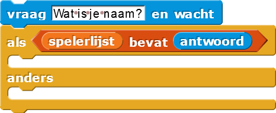

Namen van Spelers Leren
Op deze pagina, ga je een groet speler script maken dat gebruikers begroet
en hun namen onthoudt zodat eerste bezoekers verschillende begroeting krijgen van terugkerende
bezoekers.
Het bevat de meeste code die je nodig hebt om het script te maken.- Snap (klik) de stukken samen in een volgorde zodanig dat:
- De groeter zal
vragenom de speler zijn/haar naam. - Als de speler's naam in de spelers lijst staat,
Zeg"leuk je weer te zien, naam speler."
- Anders, wanneer de speler niet op de lijst staat,
Zeg"leuk je te ontmoeten, naam speler," enVoegde spelers naam toe aan de spelers lijst.
- De groeter zal
- Test en debug. Zorg ervoor dat het script werkt op de manier die wilt dat het werkt.
- Maak een
 command blok, en sleep je werkend script hierin.
command blok, en sleep je werkend script hierin. - Klik
groet spelermeerdere keren om te testen of het werkt naar behoren. Fix alle bugs.
De keuze wordt gemaakt door een als-anders.

De als en als-anders blokken worden conditionelen genoemd
omdat ze de code controleren gebaseerd op een conditie (hier, of de lijst van
spelers de namen van deze spelers bevat).
Kiezen (selecteren) welk gedeelte
van een algoritme te runnen gebaseerd op een conditie wordt een selectie
genoemd.
Rangschikken is het process van het orderen van de code (het in een volgorde plaatsen), zoals je dat hier doet.